Brisbane, Queensland · Paul has more than 25 years organising adventures
A few seats, one guide, and the Australia the tour buses drive past.
Still Wild runs private, guided adventures out of Brisbane — 4WD, hiking, camping, diving and genuine survival trips. Small on purpose: most trips run with two to four guests, Paul with more than 25 years of organising adventures behind him, and one price that covers the guide, the fuel, the permits and the food.
4WD · HIKING · CAMPING · DIVING · SNORKELLING · BOATING · SURVIVAL · FORAGING · CLIMBING · FARM STAYS · WINE COUNTRY · K'GARI · ULURU · THE REEF · BLUE MOUNTAINS · SYDNEY · PERTH ·4WD · HIKING · CAMPING · DIVING · SNORKELLING · BOATING · SURVIVAL · FORAGING · CLIMBING · FARM STAYS · WINE COUNTRY · K'GARI · ULURU · THE REEF · BLUE MOUNTAINS · SYDNEY · PERTH ·
Usually two to four. Bigger groups arranged on request.
Paramedic-qualified crew and a dedicated safety officer.
One price. Guide, fuel, permits, food.
English and 中文. The Still Wild site is published in both languages.
Why we stayed small
Smaller on purpose
Plenty of operators will put you on a coach with forty other people and call it an adventure. We went the other way.
Usually two to four
We specialise in customised, personal adventures, so the groups stay small — most trips run with two to four people, and six or seven works too. Bigger than that? Tell us the number and we will work around you.
One price, everything in it
Guide, fuel, national park and camping permits, food and drink on the adventure, and accommodation if you need it. You are not handed a bill of extras at the end of the week.
The person who answers your email comes with you
No call centre and no subcontracted driverplaceholder — proposed positioning, not a description of how Still Wild is staffed today. You plan the trip with the same crew who will be standing next to you when you get there.
The trips
Three ways to go
Tell us what you want to do and we build the adventure around you. Start from one of these — or tell us your own.
Start here
The Long Weekend
3–5 days · usually 2–4 guests
Our recommended length for a first adventure. Beaches and rainforest, a national park or two, a night under the stars, and 4WD tracks you would never find on your own.
For people who consider themselves more adventurer than tourist. Learn to forage for food, travel the length of a river, climb waterfalls and trek through bushland to the top of a mountain range. Seven days is the minimum, because it takes about that long to stop being a visitor.
Drive tours, beach tours, hiking, 4WD, camping, diving and snorkelling, a farm stay, wine country, or a night out in Brisbane. Select one or more adventures from this page or tell us directly what you would like to do. Don't be shy.
Beaches, islands, rainforests, the outback, national parks, wild rivers and streams
In Queensland alone there are more than 300 national parks. These are a few of the places we keep going back to. Every photograph on this page comes from Still Wild's own galleries at stillwild.com.au, reused with Paul's permission for this concept — image rights get settled item-by-item before anything goes live.
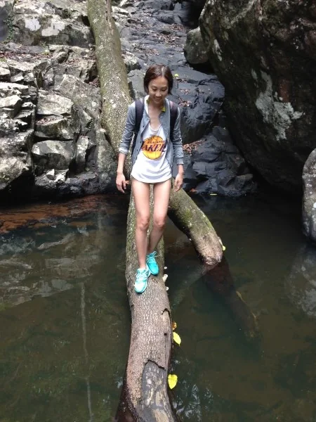
The bridge nature left us
A creek crossing the way we find it. Getting over is part of the trip.
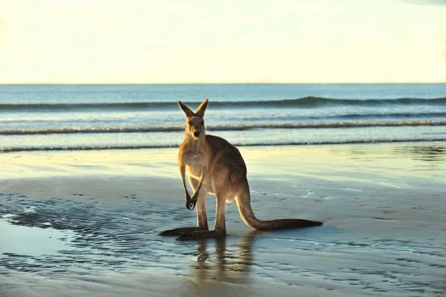
Locals first
The beach belongs to the kangaroos first. We arrive second.
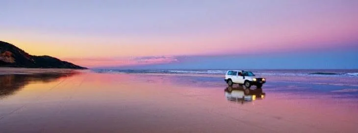
Sand highways
A run down the beach, tide out, the sky doing the rest.
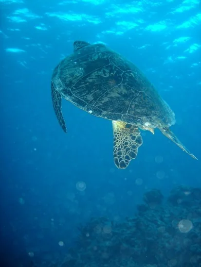
Below the waterline
A sea turtle over the coral. Snorkel or dive — your call.
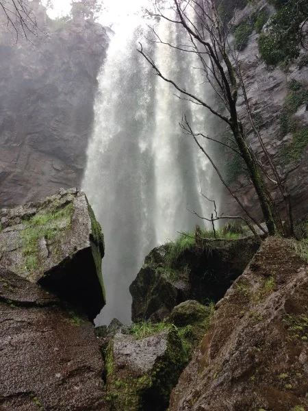
Under the falls
A waterfall at full throat, felt from the bottom looking up.
We use the names these places carry today: K'gari was formerly known as Fraser Island, and Uluru as Ayers Rock.
Also on the map
Uluru
K'gari
Blue Mountains
Cabarita Beach
Bundaberg coast
Maleny farm country
Flynn Reef
Kangaroo Point, Brisbane
Story Bridge & Riverfire
Sydney
Bondi Beach
Sunshine Coast
Gold Coast
Perth
One day out here
None of these are stock
Morning creek to campfire — shots straight from the Still Wild galleries at stillwild.com.au.
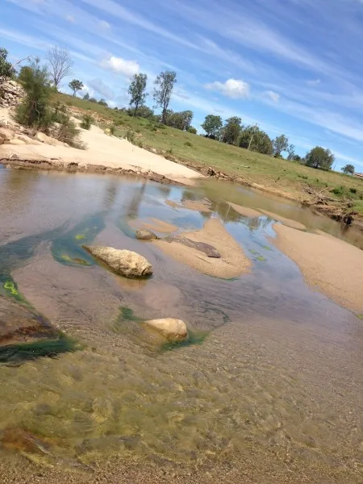
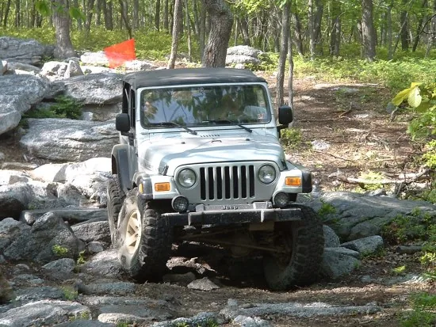
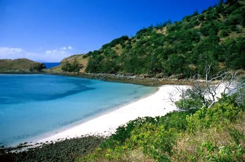
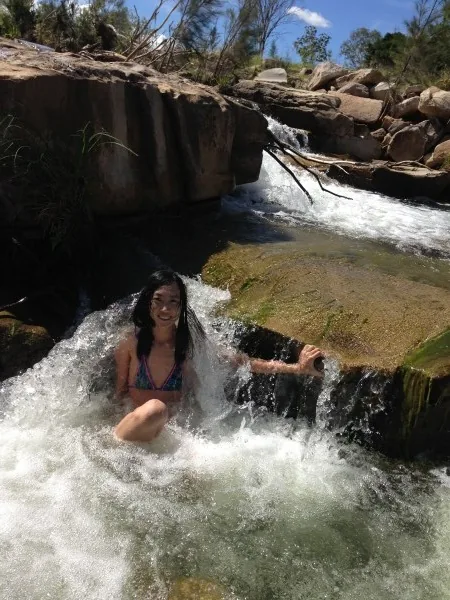
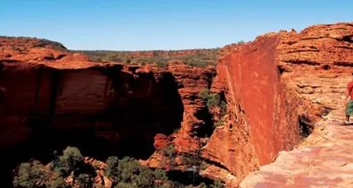
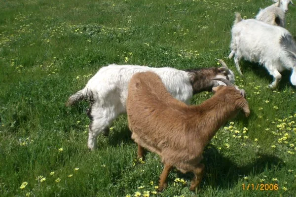
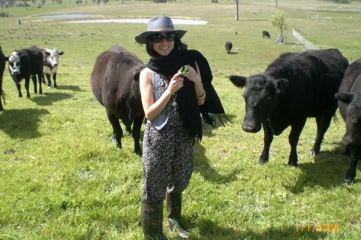
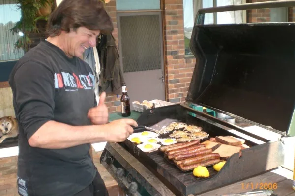
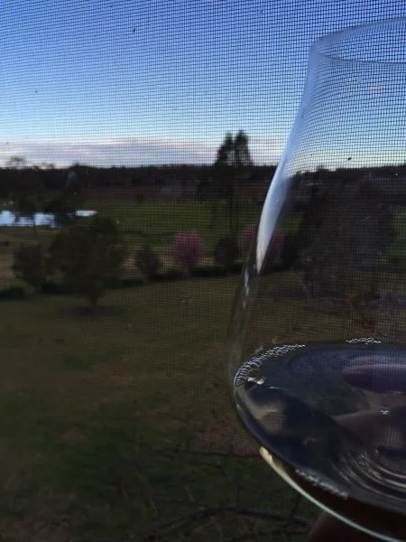
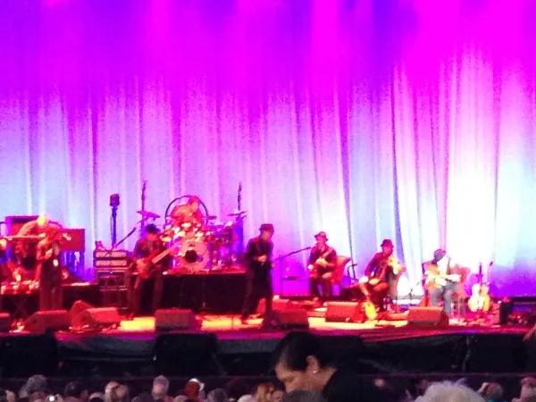
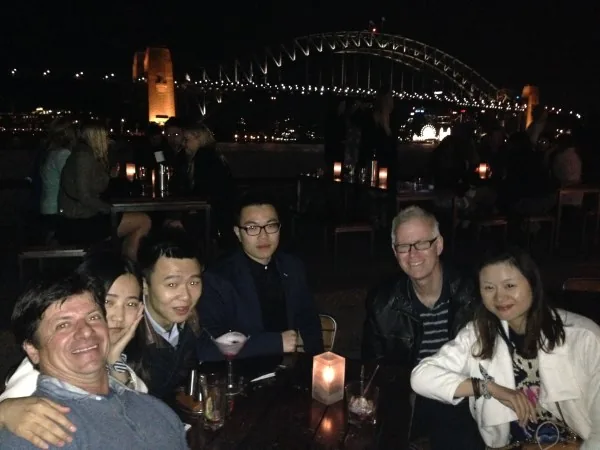
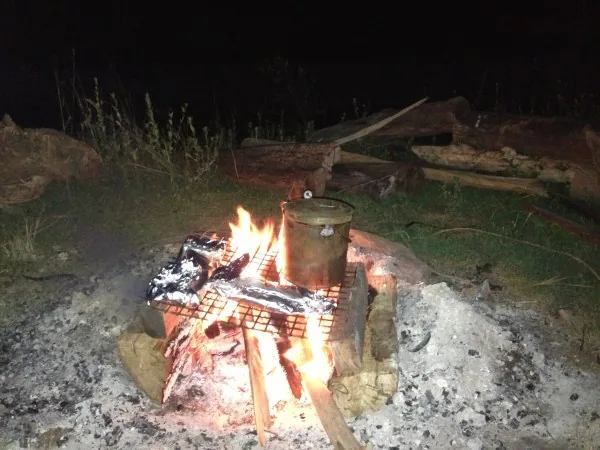
The crew
Four of the core crew
These are the people who will be helping you have the most fantastic adventure you could wish for.
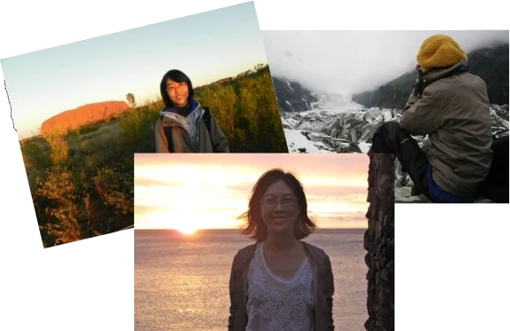
Chai Lei
The inspiration for Still Wild
Has travelled to far-flung parts of the world, climbed some of the roughest mountains, swum in all the world's oceans, and slept under the stars floating down the great rivers of central Asia and Europe. What she loves most is telling the story afterwards, around the fire.
Wilderness paramedic
Qualified scuba diver
PhD
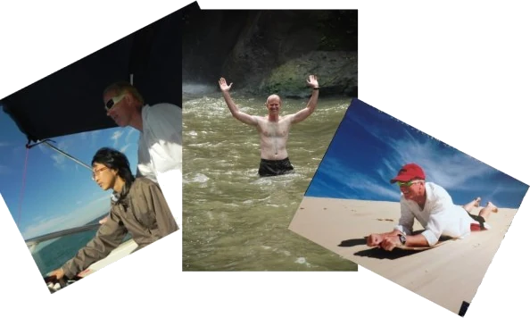
Paul
Born adventurer
Spent the early part of his life camping, climbing, swimming, caving and working outback farms all over Australia. Started running survival trips and summer camps at sixteen, and has more than 25 years organising adventures since.
Rock-climbing instructor
Survival instructor
Emergency paramedic
Scuba diver
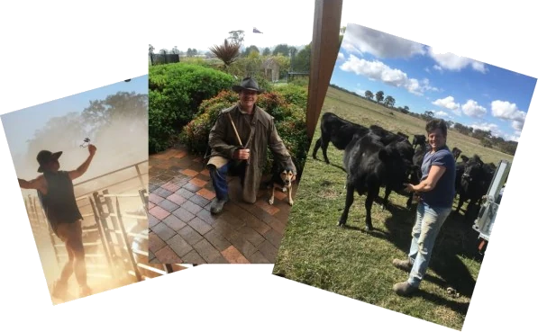
Dave
Bush & farm country
Twenty years running his family's farms outside Canberra. Knows the secret places to swim, the good places to climb, and where to find wild kangaroos, deer, boar and koalas. Mostly he likes a good laugh and a long story.
Aussie farmer
Qualified builder
Immigration agent
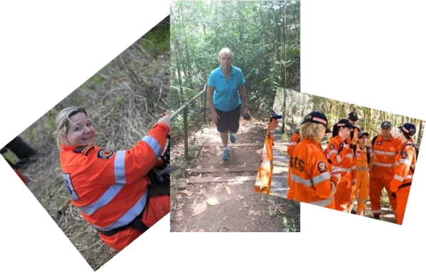
Kathy
Safety officer
The person whose whole job is getting you home in one piece. Years of wilderness search and rescue, and the calmest head on the crew in any situation.
Safety instructor
Emergency paramedic
Qld SES instructor
Safety
Yes, we know this is the boring part
We would rather put it on the front page than bury it in the small print. Some adventures do contain elements of danger, and we take every precaution and care to manage it.
Before any Still Wild adventure you will
Take part in a safety briefing covering the specific adventure you have chosen.
Complete safety training if it is needed — rock climbing, mountaineering, fire building, swimming, boating, canoeing and similar activities each have their own skills and rules.
Agree to follow the guides' instructions at all times while on the adventure.
Show proof of a valid, current insurance policy.
Travel and health insurance is compulsory
Australian government regulations mean that to come on a Still Wild adventure you must present a valid and current certificate, or receipt of payment, for your own private travel and health insurance.
Even the great explorers of the past had cover for the unfortunate. Get it sorted before you fly and you can put your whole mind into being an adventurer instead of worrying.

![Jared's WeChat QR code]()